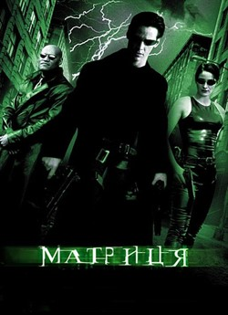
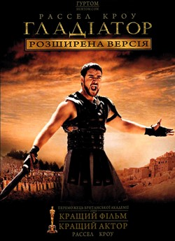
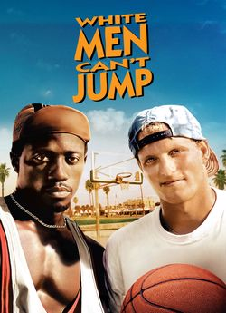

Короткий сюжет: Продовження видовищної науково-фантастичної епопеї Джеймса Кемерона. Землянин Джейк Саллі шукає своє місце серед інопланетного народу На'ві, який постраждав від людей. Йому належить захищати свій новий дім та сім'ю від ворожого вторгнення, адже до прекрасної планети Пандора знову наближається загроза Землі...
Статус:
Переглянуто
Мис страху
Постер фільму "Мис страху"
Жанр:
Трилер
Рік:
Тривалість:
1 сезон 10 серій
Короткий сюжет: Щасливе подружжя стикається зі зростаючою загрозою, коли Макс Кейді, сумнозвісний злочинець з їхнього минулого, виходить із в'язниці. Рухомий жагою помсти, він починає методично руйнувати їхнє життя, перетворюючи кожну мить на кошмар. Колись спокійне існування пари перетворюється на боротьбу за виживання, де кожен крок Кейді є продуманою частиною його жорстокого плану. Напруга зростає, а психологічний тиск стає нестерпним, змушуючи подружжя протистояти не лише зовнішній небезпеці, а й власним страхам та минулим помилкам. Серіал досліджує теми помсти, виживання та крихкості людських стосунків під впливом екстремальних обставин.
Статус:
Переглянуто
Таємниця бункера
Постер фільму "Таємниця бункера"
Жанр:
Драма
Рік:
Тривалість:
59 хвилин
У постапокаліптичному світі, де поверхня Землі стала токсичною та непридатною для життя, тисячі людей знайшли притулок у гігантському підземному бункері. Мешканці живуть за суворими правилами та вірять, що ці норми захищають їх від зовнішнього, зруйнованого світу. Проте, коли таємничі смерті та незрозумілі події починають підривати їхню віру, деякі жителі починають ставити під сумнів усе, що їм відомо про їхнє існування. Вони прагнуть розкрити правду про бункер, його походження та справжній стан зовнішнього світу, ризикуючи власним життям заради знань, які можуть змінити їхнє майбутнє назавжди.
Статус:
Переглянуто
Матриця

Постер фільму «Матриця»
Жанр:
Фантастика
Рік:
Тривалість:
136 хвилин
Короткий сюжет: Фантастичний фільм «Матриця» є першою частиною трилогії, в центрі якої виявляється молодий хлопець. Томас Андерсон живе в звичному для нього світі, де днем він співробітник великої фірми, а вночі відомий хакер Нео. Головний герой навіть не підозрює, що весь звичний світ, в якому живуть мільярди людей це матриця, але саме йому судилося зіграти вирішальну роль в прихованій боротьбі. Після збігу обставин, у нього відбудеться зустріч з Морфіусом, який є одним з лідерів в боротьбі між машинами і людьми. Саме він розповідає Нео правду про звичний світі, якого в реальності не існує. Нео належить зробити складний вибір: приєднатися до боротьби і дізнатися всю правду або повернутися до колишнього життя...
Статус:
Переглянуто
Гладіатор

Постер фільму «Гладіатор»
Жанр:
Бойовик
Рік:
Тривалість:
155 хвилин
Події історичного фільму «Гладіатор» розгортаються навколо римського генерала Максимуса. Він благородна людина і величний воїн, який керує цілими легіонами. Максимус приносить Риму нову перемогу над варварами і мимоволі опиняється в центрі палацових змов. Він з честю боровся за велику імперію, але був звинувачений у зраді і засуджений до смертної кари. В результаті зради, генерал стає втікачем і незабаром потрапляє в полон.
Найвеличнішому воїнові спіткає доля гладіатора, про якого незабаром дізнається вся імперія. Максимус здобув одну перемогу за іншою і серед народу отримує визнання і популярність. Він стає величним і непереможним воїном на арені, за яким готові піти його вірні воїни. Для імператора Максимус стає великою загрозою, з тисячами шанувальників. Однак попереду гладіатора очікує найголовніша битва, від якої буде залежати доля всієї імперії.
Статус:
Не переглянуто
Білі не вміють стрибати

Постер фільму "Білі не вміють стрибати"
Жанр:
Комедія
Рік:
Тривалість:
116 хвилин
Підприємливий Біллі живе у Лос-Анджелесі та любить баскетбол. А ще він любить просту наживу, а оскільки всі чорні хлопці в окрузі переконані, що білі не вміють грати в баскетбол, він зробив зі своєї гри успішну фінансову схему. Він приймає ставки на своє ім'я і майже завжди виграє. Так продовжується якийсь час, і Біллі не згадує про борги. Але якось за ним приходять кредитори. Та й біда, як то кажуть, не приходить одна. В окрузі з'являється класний чорношкірий спортсмен на ім'я Сідней, який готовий дати фору грі Біллі. До того ж, Сідней так само не проти підзаробити на своїй першокласній грі, як і хитрун Біллі. Між хлопцями зав'язується неабияке протистояння на баскетбольному майданчику, і кожен гне свою лінію. До того моменту, поки одному з них не спадає на думку, що разом можна зірвати набагато більший куш...